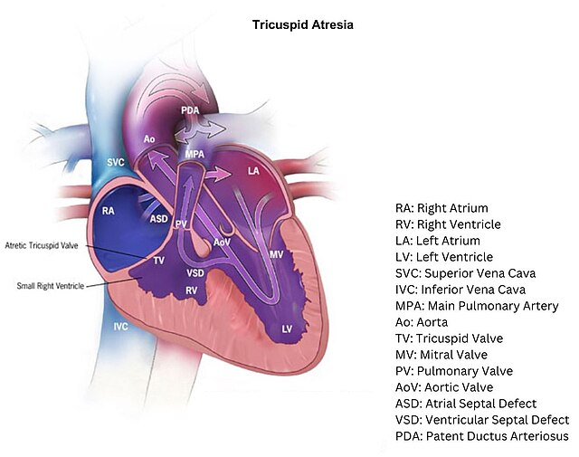

- 定義
- 三尖瓣缺失或發育不全，導致右心房與右心室之間無法進行血流傳導
- 流行病學
- 病因
- 病生理
- 三尖瓣沒發育，右心房室不相通，導致右心房因血量過多而擴大（RA dilation），且右心室發育不全（RV hypoplasia）
- 呈現單心室循環（univentricular
heart）的狀態
- 病童要存活必需依靠
- 心房中膈缺損（ASD）或 開放性卵圓孔（PFO）：使血液能從右心房進入左心房
- 心室中膈缺損（VSD）：讓血液從左心室再流回肺循環

(圖說：三尖瓣閉鎖之解剖構造及病生理學)
Reference: Tricuspid atresia with small right ventricle, Centers
for Disease Control and Prevention, https://www.cdc.gov/heart-defects/about/tricuspid-atresia.html
- 臨床特徵
- 中樞性發紺（central
cyanosis）：出生後幾天會出現
- 全身性發紺，但四肢及顏面部除外（around the core and lips）
- 常見由心肺疾病引起
- 一般新生兒剛出生後5-10分鐘內會有中樞性發紺的現象，但通常10分鐘後就會恢復
- 呼吸喘
- 頸靜脈怒張：with a prominent A wave
- 周邊脈搏減弱
- 心音：胸骨左緣holosystolic murmur、single S2
- 診斷
- 產前超音波：可在第18-22週診斷
- 心臟超音波：確診
- 三尖瓣缺失（Absent tricuspid valve）
- ASD
- 右心室發育不全（RV hypoplasia）
- 胸部X光
- 心電圖（EKG）
- 處置
- 內科治療：等待手術
- PGE1：維持PDA開啟
- 氣球心房中隔造口術（Balloon
atrial septostomy）：增加充氧血以及缺氧血血液的混合機會
- 手術
- 暫時性手術：先分流，再爭取時間手術
- B-T shunt：若合併肺動脈狹窄或閉鎖
- PA banding：預防肺動脈高壓
- 三階段手術
- Norwood procedure（stage I）：新生兒階段進行
- 分離主動脈和肺動脈，並將主動脈接到右心，用 B-T shunt 連接主動脈和肺動脈
- 心房中膈切除，促進靜脈血混合，增加主動脈血流，確保體循環有足夠血液
- Glenn
procedure（stage II）: 3-6個月
- Fontan procedure（stage III）: 2-3歲
- 只要病人前期手術安排得當、單心室功能保護得好，且肺動脈發育足夠，手術成功率高
- 手術成功的必要條件包括肺血管阻力低於 4 Wood 單位、心射出分率大於 45%。
- 肺動脈壓偏高的病人，可考慮房間隔開窗術（fenestration）
- 預後
- 手術後約 90% 可存活至 1 歲
- 10
年存活率約為 80%
- 併發症
- 心房撲動、導管阻塞
- 蛋白質流失性腸病（PLE）
- 運動耐力下降
- Reference
- Sabiston
Textbook of Surgery 21st Edition
- Schwartz's
Principles of Surgery 11th Edition
- Tricuspid Valve
Atresia, AMBOSS